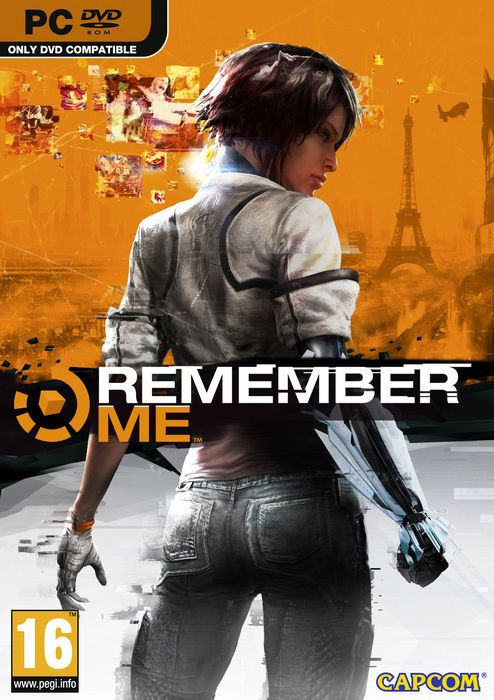

Remember Me 6.94 GB
Género: Acción, Aventura
Remember Me™ es una aventura de acción en tercera persona en la que los
jugadores asumen el papel de Nilin, una ex cazadora de recuerdos de élite
con la capacidad de entrar en las mentes de las personas y robar o incluso
alterar sus recuerdos.